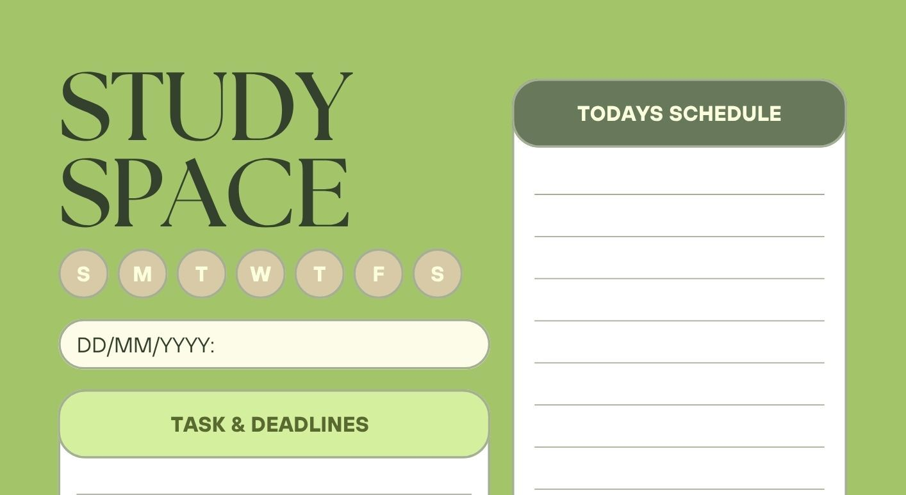

StudySpace
Personal Concept Project
Students can struggle to keep track of assignments, deadlines, and study schedules. StudySpace provides a simple and organized way to manage tasks and schedules in one place.
Tools: HTML, CSS, UI/UX Design, Wireframing
View Project